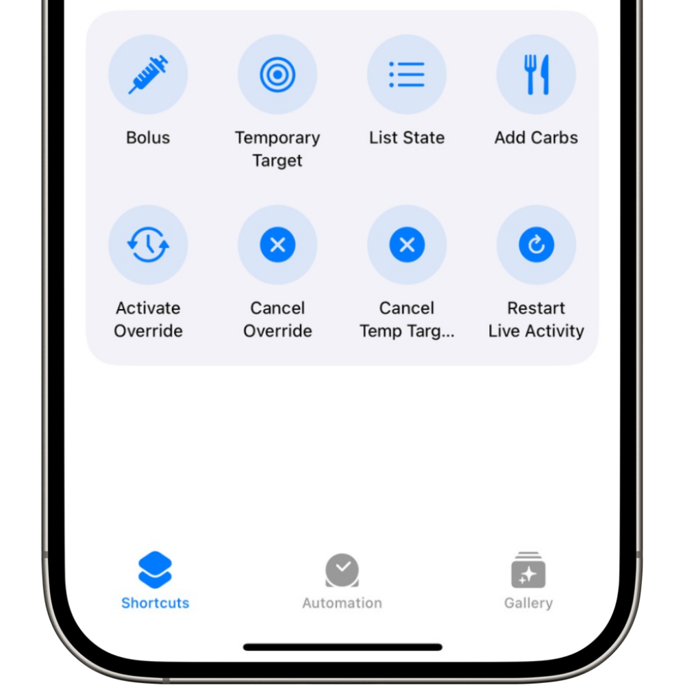

Shortcuts

Allow Bolusing with Shortcuts
Default: OFF
Enabling this setting allows the iOS Shortcuts App to send bolus commands to Trio.
Tip
Disabling this setting will still allow other Shortcut commands, like Temp Targets, Add Carbs, and Start/End Overrides.
Available Shortcut actions:
Bolus
If Allow Bolusing with Shortcuts is enabled, the internal bolusShortcut selection permits the validated bolus path (limitWithSafetyChecks rather than notAllowed).
Before rounding and enactment, the shared validator checks Max Bolus, available current IOB, Max IOB headroom, and cumulative boluses within the default six-minute lookback. A recent total greater than or equal to 20% of the requested amount rejects the request. Enabling permission does not guarantee a request will be accepted.
Logging external insulin is a separate action that does not deliver through the pump; that path has a bound of three times Max Bolus. It should not be confused with requesting a pump bolus.
List State
Shows the last glucose reading, glucose trend arrow, time since last reading, and glucose delta. It also shows current IOB and COB.
Add Carbs
Adds a carb entry into Trio.
Tip
You can also add fat or protein as part of the same entry.
Activate Override
Activates a chosen preset override.
Tip
You must first save the Preset Override on the Adjustments screen before you can activate an override using Shortcuts.
Cancel Override
Cancels an already set override.
Temporary Target
Activates a chosen preset temp target.
Tip
You must first save the Preset Temp Target on the Adjustments screen before you can activate a temp target using Shortcuts.
Cancel Temporary Target
Cancels and already active temp target.
Restart Live Activity
Restarts Trio's live activity.
1.0.2 source references
- F04 — Remote duplicate-bolus guard uses command time and a cumulative inclusive threshold
- F10 — Shortcut boluses use shared safety checks beyond the permission toggle
Full changes: added (+) and removed (−) text
--- upstream/configuration/settings/features/shortcuts.md+++ updated/configuration/settings/features/shortcuts.md@@ -28,7 +28,11 @@ ### Bolus -If [Allow Bolusing with Shortcuts](#allow-bolusing-with-shortcuts) is enabled, you will be able to use shortcuts to deliver a bolus.+If [Allow Bolusing with Shortcuts](#allow-bolusing-with-shortcuts) is enabled, the internal `bolusShortcut` selection permits the validated bolus path (`limitWithSafetyChecks` rather than `notAllowed`).++Before rounding and enactment, the shared validator checks Max Bolus, available current IOB, Max IOB headroom, and cumulative boluses within the default **six-minute** lookback. A recent total **greater than or equal to 20%** of the requested amount rejects the request. Enabling permission does not guarantee a request will be accepted.++Logging external insulin is a separate action that does not deliver through the pump; that path has a bound of three times Max Bolus. It should not be confused with requesting a pump bolus. - - - @@ -84,3 +88,14 @@ - - - <!--TODO: Add a How to use Shortcuts & Automations page and reference it here-->+++## 1.0.2 source references++- **F04 — Remote duplicate-bolus guard uses command time and a cumulative inclusive threshold**+ - [Trio/Sources/Services/BolusSafety/BolusSafetyValidator.swift:43](https://github.com/nightscout/Trio/blob/0b29cd53415e7f0e668677749cad8daf81c68c2f/Trio/Sources/Services/BolusSafety/BolusSafetyValidator.swift#L43)+ - [Trio/Sources/Services/RemoteControl/TrioRemoteControl+Bolus.swift:13](https://github.com/nightscout/Trio/blob/0b29cd53415e7f0e668677749cad8daf81c68c2f/Trio/Sources/Services/RemoteControl/TrioRemoteControl+Bolus.swift#L13)+ - [Trio/Sources/Shortcuts/Bolus/BolusIntentRequest.swift:16](https://github.com/nightscout/Trio/blob/0b29cd53415e7f0e668677749cad8daf81c68c2f/Trio/Sources/Shortcuts/Bolus/BolusIntentRequest.swift#L16)+- **F10 — Shortcut boluses use shared safety checks beyond the permission toggle**+ - [Trio/Sources/Shortcuts/Bolus/BolusIntentRequest.swift:14](https://github.com/nightscout/Trio/blob/0b29cd53415e7f0e668677749cad8daf81c68c2f/Trio/Sources/Shortcuts/Bolus/BolusIntentRequest.swift#L14)+ - [Trio/Sources/Services/BolusSafety/BolusSafetyValidator.swift:44](https://github.com/nightscout/Trio/blob/0b29cd53415e7f0e668677749cad8daf81c68c2f/Trio/Sources/Services/BolusSafety/BolusSafetyValidator.swift#L44)